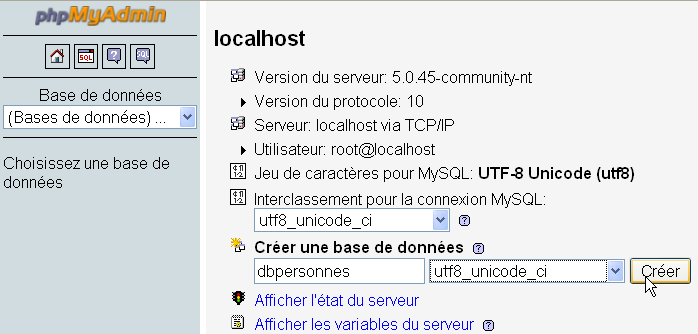
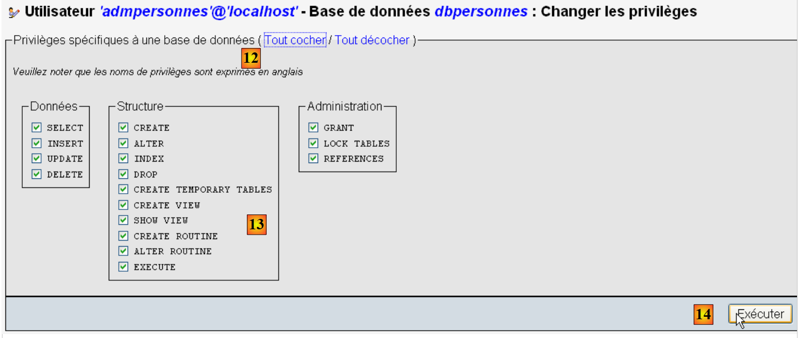
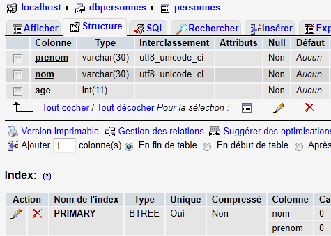

7. Utilizzo di SGBD e MySql
Scriveremo degli script PHP utilizzando un database MySQL:
 |
Il SGBD MySQL è incluso nel pacchetto WampServer (cfr. paragrafo 2.1.1). Mostriamo come creare un database e un utente MySQL.
 |
- una volta avviato, WampServer può essere gestito tramite l’icona [1] situata in basso a destra nella barra delle applicazioni.
- In [2], si avvia lo strumento di amministrazione di MySQL
Si crea un database [dbpersonnes]:

Si crea un utente [admpersonnes] con la password [nobody]:
 |  |
 |
- in [1], il nome dell'utente
- in [2], il computer SGBD su cui gli vengono concessi i diritti
- in [3], la sua password
- in [4], idem
- in [5], a questo utente non viene concesso alcun diritto
- in [6], lo si crea
 |
- in [7], si torna alla pagina iniziale di phpMyAdmin
- in [8], si utilizza il link [Privileges] di questa pagina per andare a modificare quelli dell'utente [admpersonnes] [9].
 |
1011

- in [10], si indica che si desidera assegnare all’utente [admpersonnes] i diritti sul database [dbpersonnes]
- in [11], si conferma la scelta
 |
- tramite il collegamento [12] [Tout cocher], si concedono all'utente [admpersonnes] tutti i diritti sul database [dbpersonnes] [13]
- si conferma in [14]
Ora abbiamo:
- un database MySQL [dbpersonnes]
- un utente [admpersonnes / nobody] che dispone di tutti i diritti su questo database
Scriveremo degli script PHP per sfruttare il database. PHP dispone di diverse librerie per la gestione dei database. Utilizzeremo la libreria PDO (PHP Data Objects) che funge da interfaccia tra il codice PHP e il SGBD:
 |
La libreria PDO consente allo script PHP di astrarsi dalla natura esatta del SGBD utilizzato. Pertanto, nell'esempio sopra riportato, il SGBD MySQL può essere sostituito dal SGBD Postgres con un impatto minimo sul codice dello script PHP. Questa libreria non è disponibile di default. È possibile verificarne la disponibilità nel modo seguente:
 |
- 1: dall’icona di amministrazione di WampServer, selezionare l’opzione [PHP / PHP extensions]
- 2: vengono visualizzate le diverse estensioni PDO disponibili e quelle attive: [PHP_pdo_mysql] per SGBD MySQL, [PHP_pdo_sqlite] per SGBD e SQL Lite. Per attivare un'estensione, è sufficiente cliccarci sopra. L'interprete PHP viene quindi riavviato con la nuova estensione attivata.
7.1. Connessione a un database MySQL – 1 (mysql_01)
La connessione a un SGBD avviene tramite la creazione di un oggetto PDO. Il costruttore accetta diversi parametri:
Il significato dei parametri è il seguente:
$dsn | (Data Source Name) è una stringa che specifica la natura del SGBD e la sua posizione su Internet. La stringa "mysql:host=localhost" indica che si tratta di un SGBD MySQL che opera sul server locale. Questa stringa può includere altri parametri, in particolare la porta di ascolto del SGBD e il nome del database a cui si desidera connettersi: "mysql:host=localhost:port=3306:dbname=dbpersonnes". |
$user | ID dell’utente che effettua la connessione |
$passwd | la sua password |
$driver_options | un array di opzioni per il driver di SGBD |
Solo il primo parametro è obbligatorio. L'oggetto così creato fungerà da supporto per tutte le operazioni effettuate sul database a cui ci si è collegati. Se non è stato possibile creare l'oggetto PDO, viene generata un'eccezione di tipo PDOException.
Ecco un esempio di connessione:
<?php
// connessione a un database MySql
// l'identità dell'utente è (admpersonnes,nobody)
$ID = "admpersonnes";
$PWD = "nobody";
$HOTE = "localhost";
try {
// connessione
$dbh = new PDO("mysql:host=$HOTE", $ID, $PWD);
print "Connexion réussie\n";
// chiusura
$dbh = null;
} catch (PDOException $e) {
print "Erreur : " . $e->getMessage() . "\n";
exit();
}
Risultati:
Commenti
- riga 11: la connessione a un SGBD avviene tramite la creazione di un oggetto PDO. Il costruttore viene qui utilizzato con i seguenti parametri:
- una stringa che specifica la natura del SGBD e la sua posizione su Internet. La stringa "mysql:host=localhost" indica che si tratta di un SGBD MySQL in esecuzione sul server locale. La porta non è stata specificata. Viene quindi utilizzata per impostazione predefinita la porta 3306. Non è indicato nemmeno il nome del database. Verrà quindi stabilita una connessione al SGBD MySQL; la selezione di un database specifico avverrà in un secondo momento.
- un nome utente
- la sua password
- riga 14: la chiusura della connessione avviene tramite la distruzione dell’oggetto PDO creato inizialmente.
- riga 15: la connessione a un SGBD potrebbe non andare a buon fine. In tal caso, viene generata un’eccezione di tipo PDOException.
7.2. Creazione di una tabella MySQL (mysql_02)
<?php
// connessione al database MySql
// l'identità dell'utente
$ID = "admpersonnes";
$PWD = "nobody";
// identità del database
$DSN = "mysql:host=localhost;dbname=dbpersonnes";
// connessione
list($erreur, $connexion) = connecte($DSN, $ID, $PWD);
if ($erreur) {
print "Erreur lors de la connexion à la base [$DSN] sous l'identité ($ID,$PWD) : $erreur\n";
exit;
}
// eliminazione della tabella «persone» se esiste
$requête = "drop table personnes";
$erreur = exécuteRequête($connexion, $requête);
//Si è verificato un errore?
if ($erreur)
print "$requête : Erreur ($erreur)\n";
else
print "$requête: Exécution réussie\n";
// creazione della tabella «persone»
$requête = "create table personnes (prenom varchar(30) NOT NULL, nom varchar(30) NOT NULL, age integer NOT NULL, primary key(nom,prenom))";
$erreur = exécuteRequête($connexion, $requête);
//Si è verificato un errore?
if ($erreur)
print "$requête : Erreur ($erreur)\n";
else
print "$requête: Exécution réussie\n";
// ci si disconnette e si esce
déconnecte($connexion);
exit;
// ---------------------------------------------------------------------------------
function connecte($dsn, $login, $pwd) {
// si effettua il collegamento ($login,$pwd) al database $dsn
// restituisce l’ID della connessione e un codice di errore
try {
// connessione
$dbh = new PDO($dsn, $login, $pwd);
// risposta senza errori
return array("", $dbh);
} catch (PDOException $e) {
// risposta con errore
return array($e->getMessage(), null);
}
}
// ---------------------------------------------------------------------------------
function déconnecte($connexion) {
// chiude la connessione identificata da $connexion
$connexion = null;
}
// ---------------------------------------------------------------------------------
function exécuteRequête($connexion, $sql) {
// esegue la richiesta $sql sulla connessione $connexion
try {
$connexion->exec($sql);
// risposta senza errori
return "";
} catch (PDOException $e) {
// risposta con errore
return $e->getMessage();
}
}
Risultati:
drop table personnes: Exécution réussie
create table personnes (prenom varchar(30) NOT NULL, nom varchar(30) NOT NULL, age integer NOT NULL, primary key(nom,prenom)): Exécution réussie
In PHPMyAdmin è possibile notare la presenza della tabella:
 |
Commenti
- righe 38-50: la funzione connecte crea una connessione a un SGBD. Restituisce un array ($erreur, $connexion) in cui $connexion rappresenta la connessione creata oppure null se non è stato possibile crearla. In quest’ultimo caso, $erreur è un messaggio di errore.
- righe 53-56: la funzione déconnecte chiude una connessione
- riga 59: la funzione exécuteRequête consente di eseguire un comando SQL su una connessione. La connessione è un oggetto PDO. Il metodo utilizzato per eseguire un comando SQL su un oggetto PDO è il metodo exec (riga 63). L'esecuzione della richiesta può avviare un PDOException. Pertanto, anche questo viene gestito. La funzione restituisce un messaggio di errore in caso di errore, altrimenti una stringa vuota.
7.3. Compilazione della tabella «persone» (mysql_03)
Il seguente script esegue i comandi SQL presenti nel seguente file di testo [creation.txt]:
drop table personnes
create table personnes (prenom varchar(30) not null, nom varchar(30) not null, age integer not null, primary key (nom,prenom))
insert into personnes values('Paul','Langevin',48)
insert into personnes values ('Sylvie','Lefur',70)
insert into personnes values ('Pierre','Nicazou',35)
insert into personnes values ('Geraldine','Colou',26)
insert into personnes values ('Paulette','Girond',56)
<?php
// connessione al database MySql
// identità dell'utente
$ID = "admpersonnes";
$PWD = "nobody";
// identificativo del database
$DSN = "mysql:host=localhost;dbname=dbpersonnes";
// identificativo del file di testo contenente i comandi SQL da eseguire
$TEXTE = "creation.txt";
// connessione
list($erreur, $connexion) = connecte($DSN, $ID, $PWD);
if ($erreur) {
print "Erreur lors de la connexion à la base [$DSN] sous l'identité ($ID,$PWD) : $erreur\n";
exit;
}
// creazione e compilazione della tabella
$erreurs = exécuterCommandes($connexion, $TEXTE, 1, 0);
//visualizzazione del numero di errori
print "il y a eu $erreurs[0] erreurs\n";
for ($i = 1; $i < count($erreurs); $i++)
print "$erreurs[$i]\n";
// disconnessione e chiusura
déconnecte($connexion);
exit;
// ---------------------------------------------------------------------------------
function connecte($dsn, $login, $pwd) {
...
}
// ---------------------------------------------------------------------------------
function déconnecte($connexion) {
...
}
// ---------------------------------------------------------------------------------
function exécuteRequête($connexion, $sql) {
// esegue la query $sql sulla connessione $connexion
// restituisce 1 messaggio di errore in caso di errore, altrimenti la stringa vuota
...
}
// ---------------------------------------------------------------------------------
function exécuterCommandes($connexion, $SQL, $suivi=0, $arrêt=1) {
// utilizza la connessione $connexion
// esegue i comandi SQL contenuti nel file di testo $SQL
// questo file è un file di comandi SQL da eseguire al ritmo di uno per riga
// se $suivi=1, allora ogni esecuzione di un comando SQL viene seguita da un messaggio che ne indica il successo o il fallimento
// se $arrêt=1, la funzione si interrompe al primo errore riscontrato, altrimenti esegue tutti i comandi SQL
// la funzione restituisce un array (numero di errori, errore1, errore2, ...)
// si verifica la presenza del file $SQL
if (! file_exists($SQL))
return array(1, "Le fichier $SQL n'existe pas");
// esecuzione delle query SQL contenute in $SQL
// vengono inserite in un array
$requêtes = file($SQL);
// le si eseguono – inizialmente nessun errore
$erreurs = array(0);
for ($i = 0; $i < count($requêtes); $i++) {
//c'è una richiesta vuota?
if (preg_match("/^\s*$/", $requêtes[$i]))
continue;
// esecuzione della query $i
$erreur = exécuteRequête($connexion, $requêtes[$i]);
//si è verificato un errore?
if ($erreur) {
// un altro errore
$erreurs[0]++;
// messaggio di errore
$msg = "$requêtes[$i] : Erreur ($erreur)\n";
$erreurs[] = $msg;
// monitoraggio dello schermo o no?
if ($suivi)
print "$msg\n";
// Ci fermiamo?
if ($arrêt)
return $erreurs;
} else
if ($suivi)
print "$requêtes[$i] : Exécution réussie\n";
}//per
// ritorno
return $erreurs;
}
Risultati sullo schermo:
drop table personnes : Exécution réussie
create table personnes (prenom varchar(30) not null, nom varchar(30) not null, age integer not null, primary key (nom,prenom)) : Exécution réussie
insert into personnes values('Paul','Langevin',48) : Exécution réussie
insert into personnes values ('Sylvie','Lefur',70) : Exécution réussie
insert into personnes values ('Pierre','Nicazou',35) : Exécution réussie
insert into personnes values ('Geraldine','Colou',26) : Exécution réussie
insert into personnes values ('Paulette','Girond',56) : Exécution réussie
il y a eu 0 erreurs
Gli inserimenti effettuati sono visibili con PhpMyAdmin:
 |
Commenti
La novità risiede nella funzione exécuterCommandes alle righe 48-90. Questa funzione esegue, sulla connessione $connexion, i comandi SQL presenti nel file di testo denominato $SQL. Restituisce un array di errori ($nbErreurs, $msg1, $msg2, …) dove $nbErreurs è il numero di errori, $msgi il messaggio di errore n. i.. Se non ci sono errori, l'array restituito è l'array array(0).
7.4. Esecuzione di query SQL qualsiasi (mysql_04)
Il seguente script mostra l'esecuzione dei comandi SQL contenuti nel seguente file di testo [sql.txt]:
select * from personnes
select nom,prenom from personnes order by nom asc, prenom desc
select * from personnes where age between 20 and 40 order by age desc, nom asc, prenom asc
insert into personnes values('Josette','Bruneau',46)
update personnes set age=47 where nom='Bruneau'
select * from personnes where nom='Bruneau'
delete from personnes where nom='Bruneau'
select * from personnes where nom='Bruneau'
xselect * from personnes where nom='Bruneau'
Tra questi comandi SQL, vi è il comando SELECT che restituisce risultati dal database, i comandi INSERT, UPDATE e DELETE che modificano il database senza restituire risultati e, infine, comandi errati come l'ultimo (xselect).
<?php
// connessione al database MySql
// l'identità dell'utente
$ID = "admpersonnes";
$PWD = "nobody";
// identificativo del database
$DSN = "mysql:host=localhost;dbname=dbpersonnes";
// identificativo del file di testo contenente i comandi SQL da eseguire
$TEXTE = "sql.txt";
// connessione
list($erreur, $connexion) = connecte($DSN, $ID, $PWD);
if ($erreur) {
print "Erreur lors de la connexion à la base [$DSN] sous l'identité ($ID,$PWD) : $erreur\n";
exit;
}
// esecuzione dei comandi SQL
$erreurs = exécuterCommandes($connexion, $TEXTE, 1, 0);
//visualizzazione del numero di errori
print "il y a eu $erreurs[0] erreur(s)\n";
for ($i = 1; $i < count($erreurs); $i++)
print "$erreurs[$i]\n";
// disconnessione e uscita
déconnecte($connexion);
exit;
// ---------------------------------------------------------------------------------
function connecte($dsn, $login, $pwd) {
// si connette ($login,$pwd) al database $dsn
// restituisce l'ID della connessione e un messaggio di errore
...
}
// ---------------------------------------------------------------------------------
function déconnecte($connexion) {
...
}
// ---------------------------------------------------------------------------------
function exécuteRequête($connexion, $sql) {
// esegue la query $sql sulla connessione $connexion
// restituisce un array di 2 elementi ($erreur, $résultat)
// si determina se si tratta di un select o meno
$commande = "";
if (preg_match("/^\s*(\S+)/", $sql, $champs)) {
$commande = $champs[0];
}
// esecuzione del comando
try {
if (strtolower($commande) == "select") {
$res = $connexion->query($sql);
} else {
$res = $connexion->exec($sql);
if($res===FALSE){
$info=$connexion->errorInfo();
return array($info[2],null);
}
}
// risposta senza errori
return array("", $res);
} catch (PDOException $e) {
// risposta con errore
return array($e->getMessage(), null);
}
}
// ---------------------------------------------------------------------------------
function exécuterCommandes($connexion, $SQL, $suivi=0, $arrêt=1) {
// utilizza la connessione $connexion
// esegue i comandi SQL contenuti nel file di testo $SQL
// questo file è un file di comandi SQL da eseguire al ritmo di uno per riga
// se $suivi=1, allora ogni esecuzione di un comando SQL viene seguita da un messaggio che ne indica il successo o il fallimento
// se $arrêt=1, la funzione si interrompe al primo errore riscontrato, altrimenti esegue tutti i comandi SQL
// la funzione restituisce un array (numero di errori, errore1, errore2, ...)
// si verifica la presenza del file $SQL
if (!file_exists($SQL))
return array(1, "Le fichier $SQL n'existe pas");
// esecuzione delle query SQL contenute in $TEXTE
// vengono inserite in un array
$requêtes = file($SQL);
// vengono eseguiti - inizialmente nessun errore
$erreurs = array(0);
for ($i = 0; $i < count($requêtes); $i++) {
//: la query è vuota?
if (preg_match("/^\s*$/", $requêtes[$i]))
continue;
// esecuzione della query $i
list($erreur, $res) = exécuteRequête($connexion, $requêtes[$i]);
//si è verificato un errore?
if ($erreur) {
// un altro errore
$erreurs[0]++;
// messaggio di errore
$msg = "$requêtes[$i] : Erreur ($erreur)\n";
$erreurs[] = $msg;
// monitoraggio dello schermo o no?
if ($suivi)
print "$msg\n";
// Ci fermiamo?
if ($arrêt)
return $erreurs;
} else
if ($suivi) {
print "$requêtes[$i] : Exécution réussie\n";
// informazioni sul risultato della query eseguita
afficherInfos($res);
}
}//per
// ritorno
return $erreurs;
}
// ---------------------------------------------------------------------------------
function afficherInfos($résultat) {
// visualizza il risultato $résultat di una query SQL
// si trattava di un SELECT?
if ($résultat instanceof PDOStatement) {
// vengono visualizzati i nomi dei campi
$titre = "";
$nbColonnes = $résultat->columnCount();
for ($i = 0; $i < $nbColonnes; $i++) {
$infos = $résultat->getColumnMeta($i);
$titre.=$infos['name'] . ",";
}
// si rimuove l'ultimo carattere,
$titre = substr($titre, 0, strlen($titre) - 1);
// si visualizza l'elenco dei campi
print "$titre\n";
// riga di separazione
$séparateurs = "";
for ($i = 0; $i < strlen($titre); $i++) {
$séparateurs.="-";
}
print "$séparateurs\n";
// dati
foreach ($résultat as $ligne) {
$data = "";
for ($i = 0; $i < $nbColonnes; $i++) {
$data.=$ligne[$i] . ",";
}
// si rimuove l'ultimo carattere ,
$data = substr($data, 0, strlen($data) - 1);
// si visualizza
print "$data\n";
}
} else {
// non era un select
print " $résultat lignes(s) a (ont) été modifiée(s)\n";
}
}
Risultati sullo schermo:
select * from personnes
: Exécution réussie
prenom,nom,age
--------------
Geraldine,Colou,26
Paulette,Girond,56
Paul,Langevin,48
Sylvie,Lefur,70
Pierre,Nicazou,35
select nom,prenom from personnes order by nom asc, prenom desc : Exécution réussie
nom,prenom
----------
Colou,Geraldine
Girond,Paulette
Langevin,Paul
Lefur,Sylvie
Nicazou,Pierre
select * from personnes where age between 20 and 40 order by age desc, nom asc, prenom asc : Exécution réussie
prenom,nom,age
--------------
Pierre,Nicazou,35
Geraldine,Colou,26
insert into personnes values('Josette','Bruneau',46) : Exécution réussie
1 lignes(s) a (ont) été modifiée(s)
update personnes set age=47 where nom='Bruneau' : Exécution réussie
1 lignes(s) a (ont) été modifiée(s)
select * from personnes where nom='Bruneau' : Exécution réussie
prenom,nom,age
--------------
Josette,Bruneau,47
delete from personnes where nom='Bruneau' : Exécution réussie
1 lignes(s) a (ont) été modifiée(s)
select * from personnes where nom='Bruneau' : Exécution réussie
prenom,nom,age
--------------
xselect * from personnes where nom='Bruneau' : Erreur (You have an error in your SQL syntax; check the manual that corresponds to your MySQL server version for the right syntax to use near 'xselect * from personnes where nom='Bruneau'' at line 1)
il y a eu 1 erreur(s)
xselect * from personnes where nom='Bruneau' : Erreur (You have an error in your SQL syntax; check the manual that corresponds to your MySQL server version for the right syntax to use near 'xselect * from personnes where nom='Bruneau'' at line 1)
Commenti
Ciascuno dei comandi contenuti nel file di testo [sql.txt] viene eseguito dalla funzione exécuteRequête alla riga 43.
- riga 43: i due parametri della funzione sono la connessione ($connexion) su cui devono essere eseguiti i comandi SQL e il comando SQL ($sql) da eseguire. La funzione restituisce un array di due valori ($erreur,$résultat) in cui
- $erreur è un messaggio di errore, eventualmente vuoto se non si sono verificati errori
- $résultat: il risultato restituito dall'esecuzione del comando SQL. Questo risultato varia a seconda che l'ordine sia un ordine select oppure un ordine insert, update, delete.
- righe 48-51: si recupera il primo elemento dell’ordine SQL per verificare se si tratta di un ordine select oppure di un ordine insert, update, delete.
- riga 55: nel caso di un comando select, questo viene eseguito con il metodo [PDO]->query("comando select"). Il risultato restituito è un oggetto di tipo PDOStatement.
- riga 57: nel caso di un comando insert, update o delete, questo viene eseguito con il metodo [PDO]->exec("comando SQL"). Il risultato restituito è il numero di righe modificate dal comando SQL. Pertanto, se un comando SQL delete elimina due righe, il risultato restituito è il numero intero 2. Se si verifica un errore durante l’esecuzione, il risultato restituito è il valore booleano false. In questo caso, il metodo [PDO]->errorinfo() fornisce informazioni sull’errore sotto forma di un array di valori. L’elemento con indice 2 di questo array è il messaggio di errore.
- righe 58-60: gestione dell'eventuale errore dell'operazione [PDO]->exec("ordine SQL").
- righe 65-68: gestione dell'eventuale eccezione
- riga 72: la funzione exécuterCommandes esegue sulla connessione $connexion i comandi SQL memorizzati nel file di testo $SQL. Si tratta di un codice che abbiamo già incontrato, con una piccola differenza: la riga 111.
- riga 111: la funzione exécuteRequête ha restituito un array ($erreur, $résultat) oppure $résultat è il risultato dell'esecuzione di un comando SQL. Questo risultato varia a seconda che il comando SQL fosse un comando select oppure un comando insert, update, delete. La funzione afficherInfos visualizza informazioni su questo risultato.
- riga 122: se l'ordine SQL fosse un ordine select, il risultato sarebbe di tipo PDOStatement. Questo tipo rappresenta una tabella composta da righe e colonne.
- riga 125: il metodo [PDOStatement]->getColumnCount() restituisce il numero di colonne della tabella risultante da select
- riga 127: il metodo [PDOStatement]->getMeta(i) restituisce un dizionario contenente informazioni sulla colonna n. i della tabella risultante da select.. In questo dizionario, il valore associato alla chiave 'name' è il nome della colonna.
- righe 127-129: i nomi delle colonne della tabella di risultato di select sono concatenati in una stringa di caratteri.
- righe 141-145: un oggetto di tipo PDOStatement può essere iterato tramite un ciclo foreach. Ad ogni iterazione, l'elemento ottenuto è una riga della tabella risultante da select sotto forma di un array di valori che rappresentano i valori delle diverse colonne della riga. Tutti questi valori vengono visualizzati con un ciclo for.
- riga 154: il risultato dell’esecuzione di un comando insert, update, delete è il numero di righe modificate dal comando.